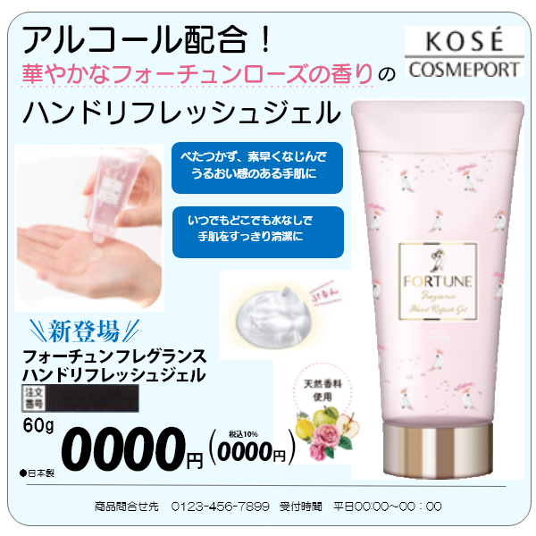
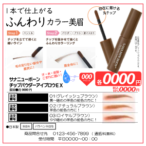

marketing&design
marketing
前職で、カタログ掲載を担当。
トレンド、季節指数、カスタマーベースに応じた、 商品提案を実施。掲載タイミング、訴求方法（ライティング・画像素材・デザイン） までを包含し、提案しておりました。
掲載後は、都度分析を行い、傾向の把握・対策を講じました。

catalog design
営業業務の傍ら、デザインカンプを作成し、 印刷会社に提出していました。(所要時間１～２時間）
素材集め、ライティングまで全て行っておりました。

